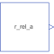

InitPositionInternal model to initialize r_rel_a for Joints.FreeMotionScalarInit |

|
Information
This information is part of the Modelica Standard Library maintained by the Modelica Association.
Compute relative position vector r_rel_a from a position vector r_a_0 to a position vector r_b_0, resolved in frame given by an orientation object R_a.
Inputs (3)
| r_a_0 |
Type: Position[3] (m) |
|---|---|
| r_b_0 |
Type: Position[3] (m) |
| R_a |
Type: Orientation |
Connectors (1)
| r_rel_a |
Type: RealOutput[3] |
|---|
Components (1)
| R_a |
Type: Orientation |
|---|
Used in Components (1)
|
Modelica.Mechanics.MultiBody.Joints
Free motion joint with scalar initialization and state selection (6 degrees-of-freedom, 12 potential states) |